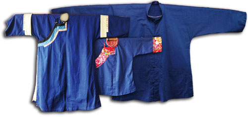

×
˄
漸漸流失的文化-客家人
首頁
客家節慶
台中東勢新丁粄節
苗栗火旁龍
六堆祈福尖炮城
竹東天穿日 臺灣客家山歌比賽
客家桐花祭
海客文化藝術季
乙未客家戰役文化季
臺中巧聖仙師文化祭
客鼓鳴心-鼓王爭霸戰
「義魄千秋」義民祭
雲林‧詔安客家文化節
國姓搶成功
臺東好米收冬祭
客家婚禮‧客家宴
文化介紹
起源
飲食
建築
服飾文化
每日一句
四縣腔
海陸腔
大埔腔
饒平腔
詔安腔
客家美食
Link 1
Link 2
Link 3
景點介紹
Link 1
Link 2
Link 3
意見回覆
留言板
聯絡我們
首頁
> 文化介紹 > 傳統服飾
客家傳統服飾—藍衫:

●經濟性:
所用布料耐洗、耐穿，所用染料以丘陵地常見植物大菁為藍色染劑。
衣服上隱蔽之處，採用粗布剪接替代。
●便利性:
結構簡單、富機能性，便於操作勞動。
大襟上直扣的配置止於腰線上，便於婦女哺乳；工作時，又可將前身摺短塞於腰帶。
寬大且翻摺之袖口，和貫通之腰帶，可用以放置物品或錢幣，隨身而不累贅。
●長久性:
穿著時間，可自早到晚，自春至冬。
穿著之期間，可自少年時期至老年，適用期長。